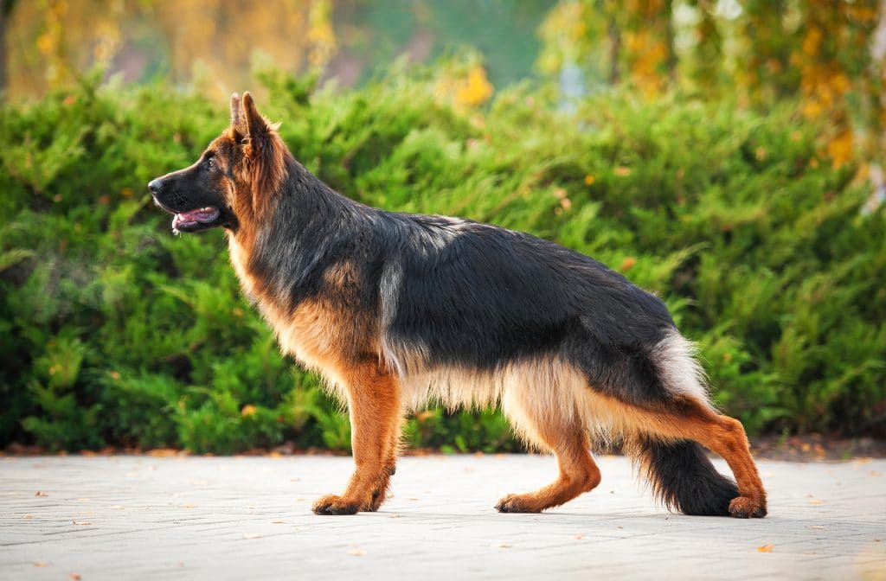

Husky syberyjski to uroczy pies o charakterystycznym wyglądzie i silnym zapleczu
historycznym. Pochodzi z Syberii, gdzie został pierwotnie hodowany przez lud Chukchi do pracy jako psi zaprzęg.
To średniej wielkości, mocny pies o gęstym futrze chroniącym go przed zimnem. Jego charakterystyczna sierść może
przybierać różne kolory, a oczy są często niebieskie lub różnokolorowe. To przyjazne, energiczne zwierzę, z
wyjątkowym temperamentem i potrzebą aktywności fizycznej. Husky są inteligentne, ale czasem uparte, co wymaga
konsekwentnego szkolenia od młodości. Ze względu na ich silne instynkty stadne i przywiązanie do ludzi, są
idealnymi towarzyszami dla rodzin. Potrzebują regularnego wysiłku fizycznego i psychicznego, zwłaszcza w
zimniejszych klimatach. Husky syberyjski to nie tylko piękny pies, ale także oddany, lojalny towarzysz.

Owczarek niemiecki to jedna z najbardziej popularnych ras psów na świecie, znana
ze swojej wszechstronności, inteligencji i lojalności. Te silne, zrównoważone psy mają imponującą sierść i
charakterystyczną sylwetkę. Były pierwotnie hodowane jako pasterskie psy, ale ze względu na swoje wyjątkowe
umiejętności, są również powszechnie wykorzystywane w służbach policyjnych, wojskowych i ratowniczych. Owczarek
niemiecki jest oddany swojej rodzinie, doskonały jako stróż, ale jednocześnie przyjazny wobec dzieci. To
energiczne zwierzę wymaga regularnej aktywności fizycznej i psychicznej, a także konsekwentnego szkolenia. Ich
inteligencja i zdolności do nauki sprawiają, że są doskonałymi uczniami. Z powodu swojej uniwersalności i
wierności, owczarek niemiecki jest często wybierany jako doskonały towarzysz życia.

Golden Retriever to rasa psa, która zdobyła serca ludzi swoją przyjazną naturą i
inteligencją. Pochodzący z Szkocji, ten średniej wielkości pies jest znany ze swojego pięknego, złocistego futra
i uśmiechniętej, łagodnej miny. To doskonały towarzysz rodziny, chętny do zabawy z dziećmi, zawsze gotowy na
zabawę i aktywność. Golden Retrievery są również jednym z najbardziej inteligentnych psów, co sprawia, że są
łatwo szkolone i chętnie uczestniczą w różnych zajęciach. Ich zdolności do pracy sprawiły, że są popularnymi
psami przewodnikami, ratownikami i terapeutami. Znane są również z przyjaznego podejścia do obcych, co czyni je
doskonałymi przyjaciółmi. Wymagają jednak regularnego ruchu i zaangażowania, aby zachować zdrowie i szczęście.